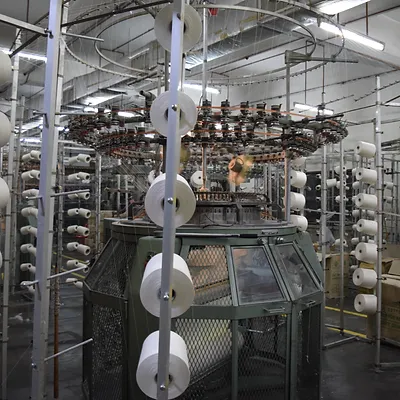

PRINCIPAL ACTIVITIES
Vertically Integrated Manufacturing
The manufacturing business is vertically integrated. Its on-house knitting, dyeing, design, tailoring and cutting, sewing and finishing activities are controlled under one roof. Full integration and independence of the various production processes gives the company better control over costs, quality and delivery schedules. This competitive feature is undeniably unique within the industry in Malaysia.
Knitting...... the production of fabric
Dyeing..... the coloration and treatment of cloth
Design and sampling...... the creative input of fashion
Tailoring and cutting...... the fabrication of the garment components
Sewing........ the assembly of clothing parts
Quality control and finishing.... the key to repeat purchase
Warehousing....the management of inventory
Advantages:
The benefits of controlling the manufacturing business under one roof include the following:
Shorter production lead time
Quick response to market requirements
Ability to produce at competitive prices
Ability to fulfil orders of lower minimum quantity and of greater variety
Firm control of the production processes
Reliable delivery schedules
Better quality control management
03-62766633
©2022 by Hing Yiap Knitting Sdn Bhd (235252-D)

 HING YIAP KNITTING SDN BHD
HING YIAP KNITTING SDN BHD